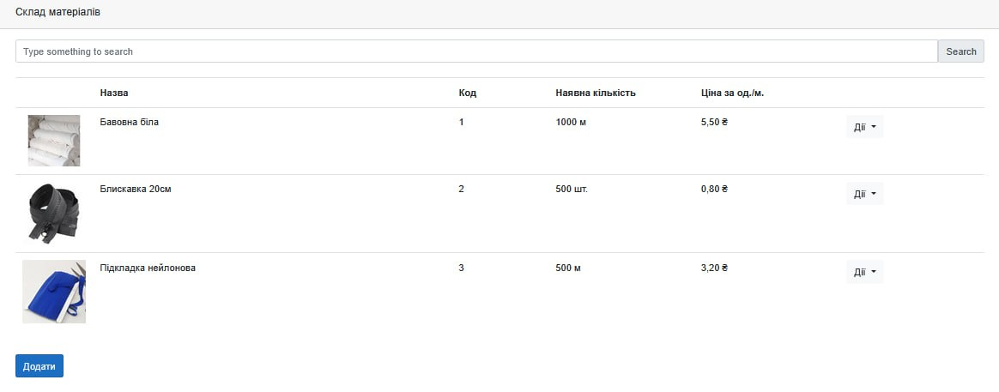

Короткий опис
Розробка додатку для автоматизації обліку продукції, матеріалів та замовлень на швейному підприємстві. Система передбачає розрахунок вартості виробів, ведення складу та зберігання накладних з можливістю перегляду і редагування.
Ключові слова
Мета дослідження
Розробити інформаційну систему, яка спростить процес управління швейним підприємством шляхом автоматизації обліку продукції, складу матеріалів та замовлень, а також забезпечить точний прорахунок вартості виробів.
Основні завдання
- Створити базу даних для зберігання інформації про продукцію, матеріали та замовлення.
- Реалізувати функціонал автоматичного прорахунку ціни виробу.
- Забезпечити формування, друк та збереження накладних.
- Розробити інтерфейс для перегляду та редагування замовлень.
- Впровадити алгоритм прорахунку для комплексної продукції.
Інтерфейс програми
Нижче представлено зображення з інтерфейсом інформаційної системи:

Очікувані результати
- Інтуїтивно зрозумілий додаток для керівника підприємства.
- Зменшення часу на облік та прорахунок вартості виробів.
- Оптимізований облік складських залишків.
- Ефективна система збереження документації.
- Підвищення загальної продуктивності підприємства.
Контактна інформація
ПІБ автора:Бардак Владислав Володимирович